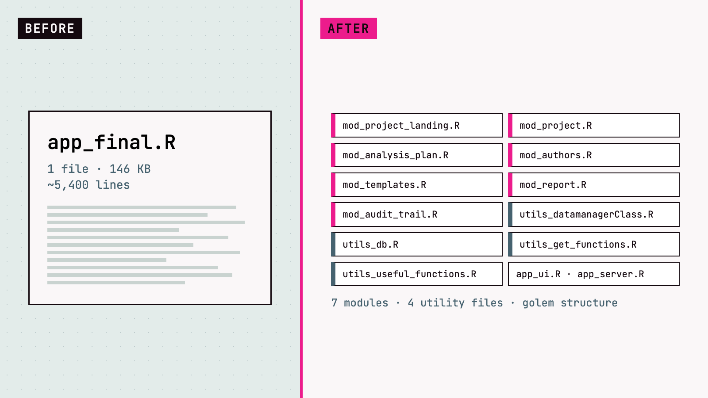
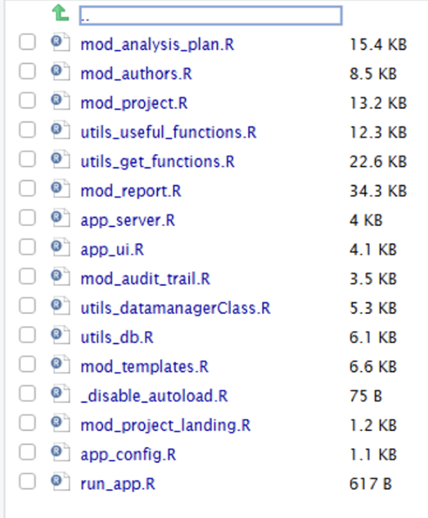
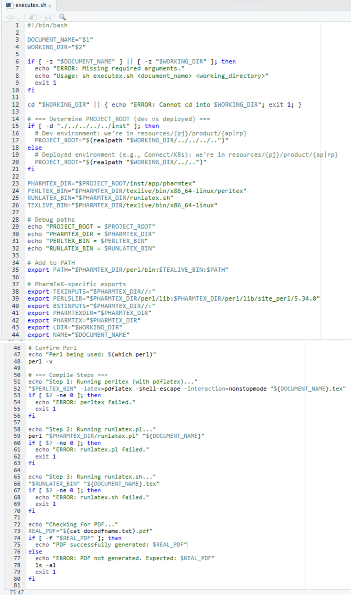

Shiny App Health Check & Refactor
A pharma client had a clinical reporting app that worked, but the whole thing lived in one file. I led a health check and refactor to make it maintainable, faster and ready for production.
The problem
The app was a single app_final.R: about 5,400 lines and 146 KB. Every change risked breaking something else, several core functions were slow, and the app only ran locally. The client needed it running in production on Posit Connect, with PDF reporting built in.

What I did
Health diagnostic and estimate. I reviewed the app end to end, mapped where the complexity lived, and gave the client a development estimate and a clear path forward.
Modularized the monolith. I split the single script into feature modules for projects, analysis plans, authors, templates, reports and an audit trail, plus utility files for data management, the database and shared helpers, all in a standard golem structure.

The new app: focused modules and utilities, none larger than 35 KB, in place of one 146 KB file. Designed and built a new UI. I designed the refreshed interface in Figma, then built it out myself in the new module structure.
Made it faster. I streamlined and rewrote core functions for efficiency.
Took it to production. I worked out what had to change to move from a local app to Posit Connect, and deployed it there.
Got PDF reporting working on Posit Connect. I implemented PharmTeX for LaTeX-based PDF reports. The hardest part was the server: the TeX toolchain had to run inside Posit Connect, where paths and the environment differ from a local machine. I wrote wrapper scripts for Windows and Linux, and the Linux one detects where it’s running so the same app works locally and on Connect.

The Linux wrapper works out whether it’s running locally or on Posit Connect, points to the bundled TeX toolchain, and runs each compile step with a clear error if it fails.
How I ran it
I led the project day to day: clear documentation and timelines, regular updates to both the client and my own team, and a written trail of plans and decisions that kept everyone aligned and accountable.
What I’d do again
- Dig deep in the diagnostic. Hidden complexity surfaces early when the first review goes beyond the code.
- Build in buffer time. New technical dependencies like PharmTeX bring unknowns that are hard to estimate.
- Modularize early. The sooner an app is organized into modules, the cheaper every later change becomes.